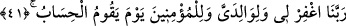

namaza devam edenlerden eyle yâhut namazı edâ edenlerden kıl.
Namazı devamlı kılmak, urûcu/mânevî yükselişi devam ettirmeye işârettir. Çünkü
‘namaz mü’minin mi’racıdır.” Bu tâbirle yine Allah ile Allah’ta seyre (seyr fillah
billâh) devam etmeye işâret vardır.
“Ey Rabbimiz,” beni ve zürriyetimden bir kısmını namaz kılan ve bunda sebat
edenlerden, puta tapmaktan uzak duranlardan kılmanla ilgili bu “duâmı kabûl et!”
41. “Ey Rabbimiz! (Amellerin) hesap olunacağı gün beni, ana-babamı ve
mü’minleri bağışla!”
“Ey Rabbimiz! (Amellerin) hesap olunacağı gün” yâni mükelleflerin amellerinin
âdilâne bir şekilde hesâba çekilmesi sâbit olup gerçekleşeceği gün...
Burada ‘hesâba çekilme’, dosdoğru olmak bakımından ayakları üzere duran/kıyam
eden birine benzetilerek istiâre yoluyla kullanılmıştır.
“Beni” yâni benden dinde evlâ olanı terk etme kabilinden olan kusurlarımı ve
herkesin beşeriyyeti îcâbı yapmaktan kurtulamayacağı diğer şeyleri, “ana-babamı”
ana-babasına yaptığı bu istiğfârı, onların durumu kendisine tam olarak açıklanmadan
önce yapmıştır. Yâni, onlara duâ etmesi yasaklanmadan önce ve îmân edeceklerine dâir
hâlâ ümidvar iken bu duâyı yapmıştır.
el-Kevâşî’de şöyle der: “İbrâhim (a.s.), anne ve babası henüz hayatta iken
inanacaklarına ümid ederek ya da annesi müslüman olduğu için babasının da müslüman
olmasını isteyerek bu duâyı yapmıştır. Âlimler İbrâhim (a.s.)’ın annesinin mü’min
olduğunu açıkça zikreder. Bu sebeple bâzı kırâat âlimleri “vâlideyye (ana-babamı)”
kelimesini, “vâlidetî (anamı) şeklinde okumuştur.
Hâfız Süyûtî der ki: “İbrâhim (a.s.)’ın amcasının ölümünden uzunca bir müddet sonra
yaptığı “Ey Rabbimiz! … beni ve ana-babamı … bağışla.” şeklindeki duâsından
“İbrâhim’in babası için af dilemesi, sâdece ona verdiği sözden dolayı idi. Ne var ki
onun Allah düşmanı olduğu kendisine belli olunca, ondan uzaklaştı (teberrî).” (et-
Tevbe, 9/114) âyetinde kâfir olduğu belirtilen ve kendisi için bağış dilemekten uzak
kalması istenilen kişinin gerçek babası değil, amcası olduğu hükmü çıkarılabilir.
Nitekim Araplar teyzeye anne dedikleri gibi amcaya da baba derler.”
“Ve” gerek benim zürriyetimden gerekse başkalarından olan bütün “mü’minleri
bağışla.”
Âyette sâdece mü’min kadınlar bırakılarak mü’min erkeklerin zikredilmeleriyle
yetinilmiştir. Çünkü kadınlar muhtelif hükümlerde erkeklere tâbidir. Bağışlanmak için
yapılan bu duâya herkesin katıldığını göstermek için çoğul zamîri kullanılmıştır.
Bir hadiste şöyle buyrulmuştur: “Kim duâsını bütün erkek ve kadın mü’minlere